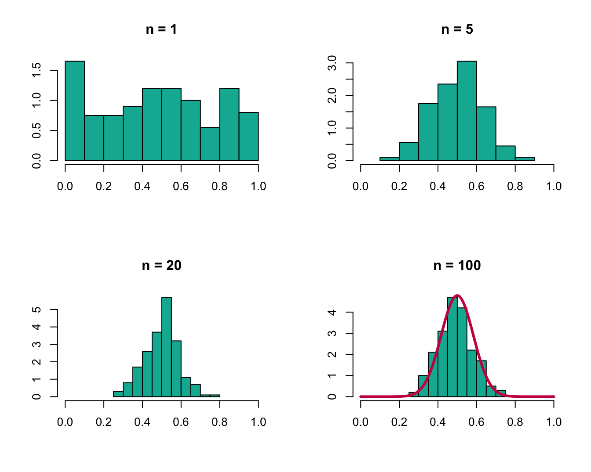
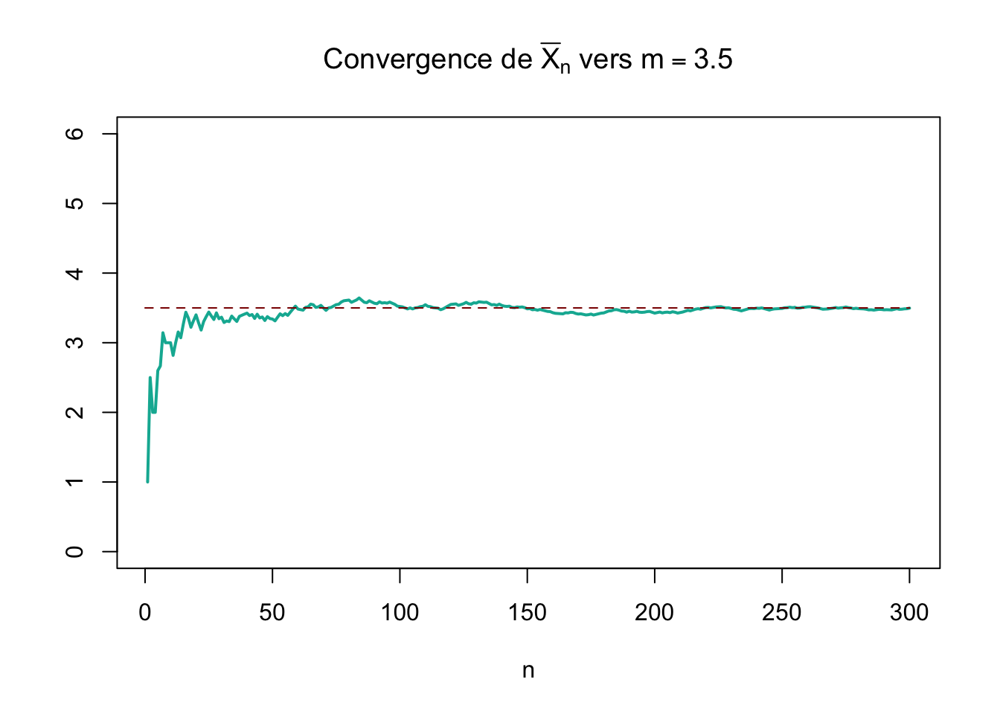
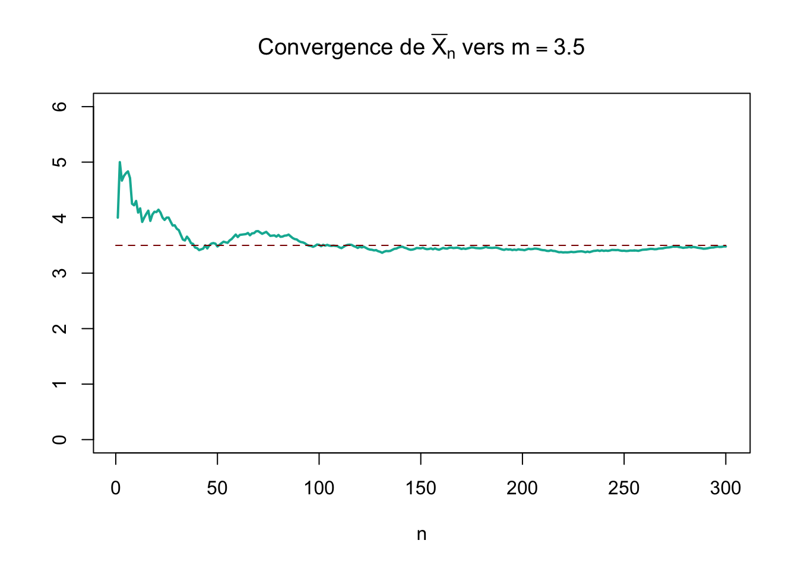

| 91.6 | 35.7 | 251 | 24.3 | 5.4 | 67.3 | 171 | 9.5 | 118 | 57.1 |
5 Échantillonnage et Théorèmes limites
5.1 Introduction
La statistique est la science dont l’objet est de recueillir, de traiter et d’analyser des données issues de l’observation de phénomènes aléatoires, c’est-à-dire dans lesquels le hasard intervient.
L’analyse des données est utilisée pour décrire les phénomènes étudiés, faire des prévisions et prendre des décisions à leur sujet. En cela, la statistique est un outil essentiel pour la compréhension et la gestion des phénomènes complexes.
Les données étudiées peuvent être de toute nature, ce qui rend la statistique utile dans tous les champs disciplinaires et explique pourquoi elle est enseignée dans toutes les filières universitaires, de l’économie à la biologie en passant par la psychologie, et bien sûr les sciences de l’ingénieur.
Le point fondamental est que les données sont entâchées d’incertitudes et présentent des variations pour plusieurs raisons :
- le déroulement des phénomènes observés n’est pas prévisible à l’avance avec certitude (par exemple on ne sait pas prévoir avec certitude les cours de la bourse ou les pannes des voitures)
- toute mesure est entâchée d’erreur
- etc…
Il y a donc intervention du hasard et des probabilités. L’objectif essentiel de la statistique est de maîtriser au mieux cette incertitude pour extraire des informations utiles des données, par l’intermédiaire de l’analyse des variations dans les observations.
Les méthodes statistiques se répartissent en deux classes :
- La statistique descriptive, statistique exploratoire ou analyse des données, a pour but de résumer l’information contenue dans les données de façon synthétique et efficace. Elle utilise pour cela des représentations de données sous forme de graphiques, de tableaux et d’indicateurs numériques (par exemple des moyennes). Elle permet de dégager les caractéristiques essentielles du phénomène étudié et de suggérer des hypothèses pour une étude ultérieure plus sophistiquée. Les probabilités n’ont ici qu’un rôle mineur.
- La statistique inférentielle va au delà de la simple description des données. Elle a pour but de faire des prévisions et de prendre des décisions au vu des observations. En général, il faut pour cela proposer des modèles probabilistes du phénomène aléatoire étudié et savoir gérer les risques d’erreurs. Les probabilités jouent ici un rôle fondamental.
Pour le grand public, les statistiques désignent les résumés de données fournis par la statistique descriptive. Par exemple, on parle des “statistiques du chômage” ou des “statistiques de l’économie américaine”. Mais on oublie en général les aspects les plus importants liés aux prévisions et à l’aide à la décision apportés par la statistique inférentielle.
L’informatique et la statistique sont deux éléments du traitement de l’information : l’informatique acquiert et traite l’information tandis que la statistique l’analyse. Les deux disciplines sont donc étroitement liées. En particulier, l’augmentation considérable de la puissance des ordinateurs et la facilité de transmission des données par internet ont rendu possible l’analyse de très grandes masses de données, ce qui nécessite l’utilisation de méthodes de plus en plus sophistiquées, connues sous le nom de data mining, fouille de données ou Big Data. Enfin, l’informatique décisionnelle ou business intelligence regroupe les outils d’aide à la décision devenus essentiels dans la gestion des entreprises. Ces outils nécessitent un recours important aux méthodes statistiques.
Plus généralement, tout ingénieur est amené à prendre des décisions au vu de certaines informations, dans des contextes où de nombreuses incertitudes demeurent. Il importe donc qu’un ingénieur soit formé aux techniques de gestion du risque et de traitement de données expérimentales.
Aujourd’hui, les statistiques sont partout. Les statistiques descriptives sont présentées dans tous les journaux et magazines. L’inférence statistique est devenue indispensable à la santé publique et la recherche médicale, à l’ingénierie et les études scientifiques, à la commercialisation et l’éducation, la comptabilité, l’économie, les prévisions météorologiques, les sondages, aux sports, à l’assurance, et à toutes les recherches scientifiques. Les statistiques sont en effet enracinées dans notre patrimoine intellectuel.
La démarche statistique
La statistique et les probabilités sont les deux aspects complémentaires de l’étude des phénomènes aléatoires. Ils sont cependant de natures bien différentes.
Les probabilités peuvent être envisagées comme une branche des mathématiques pures, basée sur la théorie de la mesure, abstraite et complètement déconnectée de la réalité.
Les probabilités appliquées proposent des modèles probabilistes du déroulement de phénomènes aléatoires concrets. On peut alors, préalablement à toute expérience, faire des prévisions sur ce qui va se produire.
Par exemple, il est usuel de modéliser la durée de bon fonctionnement ou durée de vie d’un système, mettons une ampoule électrique, par une variable aléatoire \(X\) de loi exponentielle de paramètre \(\lambda\). Ayant adopté ce modèle probabiliste, on peut effectuer tous les calculs que l’on veut. Par exemple :
- La probabilité que l’ampoule ne soit pas encore tombée en panne à la date \(t\) est \(P(X > t) = e^{−\lambda t}\) .
- La durée de vie moyenne est \(E(X) = 1/\lambda\).
- Si \(n\) ampoules identiques sont mises en fonctionnement en même temps, et qu’elles fonctionnent indépendamment les unes des autres, le nombre \(N_t\) d’ampoules qui tomberont en panne avant un instant \(t\) est une variable aléatoire de loi binomiale \(\mathcal{B}(n,P(X ≤ t)) = \mathcal{B}(n,1 − e^{-\lambda t})\). Donc on s’attend à ce que, en moyenne, \(E(N_t) = n(1 − e^{-\lambda t})\) ampoules tombent en panne entre 0 et \(t\)
Dans la pratique, l’utilisateur de ces ampoules est très intéressé par ces résultats. Il souhaite évidemment avoir une évaluation de leur durée de vie, de la probabilité qu’elles fonctionnent correctement pendant plus d’un mois, un an, etc… Mais si l’on veut utiliser les résultats théoriques énoncés plus haut, il faut d’une part pouvoir s’assurer qu’on a choisi un bon modèle, c’est-à-dire que la durée de vie de ces ampoules est bien une variable aléatoire de loi exponentielle, et, d’autre part, pouvoir calculer d’une manière ou d’une autre la valeur du paramètre \(\lambda\). C’est la statistique qui va permettre de résoudre ces problèmes. Pour cela, il faut faire une expérimentation, recueillir des données et les analyser.
On met donc en place ce qu’on appelle un essai ou une expérience. On fait fonctionner en parallèle et indépendamment les unes des autres \(n = 10\) ampoules identiques, dans les mêmes conditions expérimentales, et on relève leurs durées de vie. Admettons que l’on obtienne les durées de vie suivantes, exprimées en heures :
Notons \(x_1 ,\ldots,x_n\) ces observations. Il est bien évident que la durée de vie des ampoules n’est pas prévisible avec certitude à l’avance. On va donc considérer que \(x_1 ,\ldots,x_n\) sont les réalisations de variables aléatoires \(X_1 ,\ldots,X_n\). Cela signifie qu’avant l’expérience, la durée de vie de la \(i^{\text{ème}}\) ampoule est inconnue et que l’on traduit cette incertitude en modélisant cette durée par une variable aléatoire \(X_i\). Mais après l’expérience, la durée de vie a été observée. Il n’y a donc plus d’incertitude, cette durée est égale au réel \(x_i\). On dit que \(x_i\) est la réalisation de \(X_i\) sur l’essai effectué.
Puisque les ampoules sont identiques, il est naturel de supposer que les \(X_i\) sont de même loi. Cela signifie qu’on observe plusieurs fois le même phénomène aléatoire. Mais le hasard fait que les réalisations de ces variables aléatoires de même loi sont différentes, d’où la variabilité dans les données. Puisque les ampoules ont fonctionné indépendamment les unes des autres, on pourra également supposer que les \(X_i\) sont des variables aléatoires indépendantes. On peut alors se poser les questions suivantes :
- Au vu de ces observations, est-il raisonnable de supposer que la durée de vie d’une ampoule est une variable aléatoire de loi exponentielle? Si non, quelle autre loi serait plus appropriée? C’est un problème de choix de modèle ou de test d’adéquation.
- Si le modèle de loi exponentielle a été retenu, comment proposer une valeur (ou un ensemble de valeurs) vraisemblable pour le paramètre \(\lambda\)? C’est un problème d’estimation paramétrique.
- Dans ce cas, peut-on garantir que \(\lambda\) est inférieur à une valeur fixée \(\lambda_0\) ? Cela garantira alors que \(E(X) = 1/\lambda \geq 1/\lambda_0\), autrement dit que les ampoules seront suffisamment fiables. C’est un problème de test d’hypothèses paramétriques.
- Sur un parc de 100 ampoules, à combien de pannes peut-on s’attendre en moins de 50 h? C’est un problème de prévision.
Le premier problème central est celui de l’estimation : comment proposer, au vu des observations, une approximation des grandeurs inconnues du problème qui soit la plus proche possible de la réalité? La première question peut se traiter en estimant la fonction de répartition ou la densité de la loi de probabilité sous-jacente, la seconde revient à estimer un paramètre de cette loi, la troisième à estimer un nombre moyen de pannes sur une période donnée.
Le second problème central est celui des tests d’hypothèses : il s’agit de se prononcer sur la validité d’une hypothèse liée au problème : la loi est-elle exponentielle? \(\lambda\) est-il inférieur à \(\lambda_0\)? un objectif de fiabilité est-il atteint? En répondant oui ou non à ces questions, il est possible que l’on se trompe. Donc, à toute réponse statistique, il faudra associer le degré de confiance que l’on peut accorder à cette réponse. C’est une caractéristique importante de la statistique par rapport aux mathématiques classiques, pour lesquelles un résultat est soit juste, soit faux.
Pour résumer, la démarche probabiliste suppose que la nature du hasard est connue. Cela signifie que l’on adopte un modèle probabiliste particulier (ici la loi exponentielle), qui permettra d’effectuer des prévisions sur les observations futures. Dans la pratique, la nature du hasard est inconnue. La statistique va, au vu des observations, formuler des hypothèses sur la nature du phénomène aléatoire étudié. Maîtriser au mieux cette incertitude permettra de traiter les données disponibles. Probabilités et statistiques agissent donc en aller-retour dans le traitement mathématique des phénomènes aléatoires.
L’exemple des ampoules est une illustration du cas le plus fréquent où les données se présentent sous la forme d’une suite de nombres. C’est ce cas que nous traiterons dans ce cours, mais il faut savoir que les données peuvent être beaucoup plus complexes : des fonctions, des images, etc… Les principes et méthodes généraux que nous traiterons dans ce cours seront adaptables à tous les types de données.
5.2 Échantillonnage
L’étude d’une caractéristique d’une pièce fabriquée en grand nombre (telle que la luminosité d’une ampoule, sa durée de vie ou encore le diamètre d’une pièce mécanique) relève, elle aussi, de la statistique descriptive. Il n’est toutefois pas possible de mesurer cette caractéristique sur toutes les pièces produites. Il est alors nécessaire de se limiter à l’étude des éléments d’un échantillon. Cet échantillon devra répondre à des critères particuliers pour pouvoir représenter la population toute entière dans l’étude statistique.
La démarche statistique présente plusieurs étapes :
- Prélèvement d’un échantillon représentatif de la population ou échantillon aléatoire par des techniques appropriées. Cela relève de la théorie de l’échantillonnage.
- Étude des caractéristiques de cet échantillon, issu d’une population dont on connaît la loi de probabilité. On s’intéresse principalement à ceux issus d’une population gaussienne.
Définition 5.1 (Echantillon) Un échantillon aléatoire est un \(n\)-uplet \((X_1,\ldots,X_n)\) de \(n\) variables aléatoires indépendantes suivant la même loi qu’une variable \(X\) appelée variable aléatoire parente. Une réalisation de l’échantillon sera notée \((x_1,\ldots,x_n)\).
Définition 5.2 (Une statistique) Soit \(X\) une variable aléatoire. Considérons un \(n\)-échantillon \((X_1,\ldots,X_n)\) de \(X\). Une Statistique \(T\) est une variable aléatoire fonction mesurable de \((X_1,\ldots,X_n)\).
\[ T(X)=T(X_1,\ldots,X_n) \]
A un échantillon, on peut associer plusieurs statistiques.
5.3 La statistique \(\overline{X}_n\)
Définition 5.3 (Moyenne empirique) La statistique \(\overline{X}_n\) ou moyenne empirique d’un échantillon est une statistique définie par \[\overline{X}_n = \frac{1}{n} \sum_{i=1}^n X_i\]
Espérance et variance de \(\overline{X}_n\):
Soit \(m\) l’espérance et \(\sigma^2\) la variance de la variable parente \(X\) (e.g. l’espérance et la variance de la population). L’espérance et la variance de la statistique \(\overline{X}_n\) sont:
\[E(\overline{X}_n) = m\] \[V(\overline{X}_n) = \frac{\sigma^2}{n}\]
Démonstration:
- \(E(\overline{X}_n) = \frac{1}{n} \sum_{i=1}^n E(X_i) = \frac{1}{n} nm = m\)
- \(V(\overline{X}_n) =V(\frac{1}{n} \sum_{i=1}^n X_i) = \frac{1}{n^2} V(\sum_{i=1}^n X_i) = \frac{1}{n^2} \sum_{i=1}^n V(X_i) = \frac{1}{n^2} \sum_{i=1}^n \sigma^2 = \frac{1}{n^2} n \sigma^2 = \frac{\sigma^2}{n} \quad\)(Les \(X_i\) étant supposées indépendantes)
5.4 Théorèmes limites
Cette section introduit trois résultats importants de la théorie asymptotique des probabilités: la loi faible des grands nombres, la loi forte des grands nombres et le théorème central limite, dans sa version pour variables aléatoires indépendantes et identiquement distribuées (\(X_i\) suivent la même loi pour \(i=1,\ldots,n\)). Ce sont des résultats qui traitent les propriétés de la distribution de la statistique \(\overline{X}_n\).
Des variables aléatoires indépendantes et identiquement distribuées (i.i.d) sont des variables aléatoires indépendantes qui suivent la même loi de probabilité, donc ont la même espérance et la même variance.
Les deux lois des grands nombres énoncent les conditions sous lesquelles la moyenne d’une suite de variables aléatoires converge vers leur espérance commune et expriment l’idée que lorsque le nombre d’observations augmente, la différence entre la valeur attendue (\(m = E(X)\)) et la valeur observée (\(\overline{X}_n\)) tend vers zéro. De son côté, le théorème central limite établit que la distribution standardisée d’une moyenne tend asymptotiquement vers une loi normale, et cela même si la distribution des variables sous-jacentes est non normale. Ce résultat est central en probabilités et statistique et peut être facilement illustré (cf. Figure 5.1). Indépendamment de la distribution sous-jacente des observations (ici une loi uniforme), lorsque \(n\) croît, la distribution de \(\overline{X}_n\) tend vers une loi normale: on observe dans l’illustration la forme de plus en plus symétrique de la distribution ainsi que la concentration autour de l’espérance (ici \(m = 0.5\)) et la réduction de la variance.

Les retombées pratiques de ces résultats sont importantes. En effet, la moyenne de variables aléatoires est une quantité qui intervient dans plusieurs procédures statistiques. Aussi, le résultat du théorème central limite permet l’approximation des probabilités liées à des sommes de variables aléatoires (e.g. méthode de Monte-Carlo). De plus, lorsque l’on considère des modèles statistiques, le terme d’erreur représente la somme de beaucoup d’erreurs (erreurs de mesure, variables non considérées, etc.). En prenant comme justification le théorème central limite, ce terme d’erreur est souvent supposé se comporter comme une loi normale.
5.4.1 Loi faible des grands nombres
Théorème 5.1 (Loi faible des grands nombres) Soit \(X_1,\ldots,X_n\) une suite de variables aléatoires indépendantes et identiquement distribuées. On suppose que \(E(|X_i|) < \infty\) et que tous les \(X_i\) admettent la même espérance \(E(X_i)=m\). Alors:
\[\overline{X}_n = \frac{1}{n} \sum_{i=1}^n X_i \rightarrow m \quad \text{au sens de la convergence en probabilités}\]
càd \(\forall \varepsilon > 0, \lim_{n \to \infty} P(|\overline{X}_n - m|> \varepsilon) = 0\).
\(\overline{X}_n \text{ converge en probabilité vers } m \text{ quand } n \rightarrow +\infty\).
5.4.2 Loi forte des grands nombres
Théorème 5.2 (Loi forte des grands nombres) Soit \(X_1,\ldots,X_n\) une suite de variables aléatoires indépendantes et identiquement distribuées. On suppose que \(E(|X_i|) < \infty\) et que tous les \(X_i\) admettent la même espérance \(E(X_i)=m\). Alors:
\[\overline{X}_n = \frac{1}{n} \sum_{i=1}^n X_i \rightarrow m \quad \text{presque sûrement}\]
càd \(P\big( \lim_{n \to \infty} \overline{X}_n = m\big) = 1\).
\(\overline{X}_n \text{ converge presque sûrement vers } m\)
Illustration de la loi des grands nombres
Prenons l’exemple d’un lancer de dé équilibré. On lance un dé et on note \(X\) le résultat obtenu. La loi de \(X\) est la suivante:
| \(x_i\) | \(1\) | \(2\) | \(3\) | \(4\) | \(5\) | \(6\) |
| \(P(X = x_i)\) | \(\frac{1}{6}\) | \(\frac{1}{6}\) | \(\frac{1}{6}\) | \(\frac{1}{6}\) | \(\frac{1}{6}\) | \(\frac{1}{6}\) |
Et donc l’espérance de \(X\) est \(E(X)=\sum_i p_i x_i = 3.5\). Pour illustrer le théorème on va procéder à un échantillonnage. On répète le lancement du dé \(n\) fois. A chaque \(n\) on va calculer la moyenne empirique des résultats obtenus, qu’on va noter \(\overline{X}_n\). Selon la loi de grands nombre cette moyenne va converger vers l’espérance théorique:
\[\overline{X}_n \rightarrow E(X)=m=3.5 \quad \text{quand} \quad n \rightarrow \infty\]
Traçons l’évolution de la moyenne empirique en fonction de la taille \(n\) de l’échantillon, dans deux différents échantillonnages aléatoires:


5.4.3 Théorème central limite
Théorème 5.3 (Théorème Central Limite (TCL)) Soit \(X_1,\ldots,X_n\) une suite de variables aléatoires indépendantes et identiquement distribuées, d’espérance \(m\) et variance \(\sigma^2\) finie. Alors
\[ \frac{\overline{X}_n - m}{ \sigma/\sqrt{n}} \xrightarrow{n \to \infty} \mathcal{N}(0,1) \quad \text{en distribution} \tag{5.1}\]
On voit bien que, afin que la convergence se fasse, une standardisation est nécessaire: en effet, on peut voir le rapport dans (5.1) comme
\[\frac{\overline{X}_n - m}{ \sigma/\sqrt{n}} = \frac{\overline{X}_n - E(\overline{X}_n)}{ \sqrt{var(\overline{X}_n)}}\]
Notes Historiques
La loi faible des grands nombres a été établie la première fois par J. Bernoulli pour le cas particulier d’une variable aléatoire binaire ne prenant que les valeurs 0 ou 1. Le résultat a été publié en 1713.
La loi forte des grands nombres est due au mathématicien E. Borel (1871- 1956), d’où parfois son autre appellation: théorème de Borel.
Le théorème central limite a été formulé pour la première fois par A. de Moivre en 1733 pour approximer le nombre de “piles” dans le jet d’une pièce de monnaie équilibrée. Ce travail a été un peu oublié jusqu’à ce que P.S. Laplace ne l’étende à l’approximation d’une loi binomiale par la loi normale dans son ouvrage Théorie analytique des probabilités en 1812. C’est dans les premières années du \(XX^e\) siècle que A. Lyapounov l’a redéfini en termes généraux et prouvé avec rigueur.
Application 1:
Pour une taille d’échantillon \(n\) suffisamment grande, on peut considérer que \(\overline{X}_n\) a pour loi:
\[ \overline{X}_n \thicksim \mathcal{N}\big(m, \frac{\sigma^2}{n}\big)\]
Note
Dans la notation de la loi normale ci dessus \(\frac{\sigma^2}{n}\) est la variance. \(\frac{\sigma}{\sqrt{n}}\) est l’écart-type.
Application 2: la loi d’un pourcentage, étudiée dans la section suivante.
5.5 Loi d’un pourcentage
Soit \(X\) la variable aléatoire représentant le nombre de succès au cours d’une suite de \(n\) répétitions indépendantes d’une même épreuve dont la probabilité de succès est \(p\).
La loi de \(X\) est la loi binomiale de paramètres \(n\) et \(p\) notée \(\mathcal{B}(n, p)\). \(X\) est la somme de \(n\) variables indépendantes de Bernoulli de paramètre \(p\).
Notons \(P_n\) la fréquence empirique du nombre de succès parmi les \(n\) épreuves:
\[P_n= \frac{X}{n}\]
\(P_n = \overline{X}_n\) car \(X\) est la somme de \(n\) variables indépendantes de Bernoulli de paramètre \(p\).
\(P_n\) a pour espérance et pour variance:
\[E(P_n) = p \quad \quad \text{et} \quad \quad V(P_n) = \frac{p(1-p)}{n}\]
En appliquant le théorème central limite à \(X\) somme des variables de Bernoulli:
\[ \text{Pour } n \text{ suffisamment grand, on peut considérer que } P_n \text{ suit la loi normale :}\] \[P_n \thicksim \mathcal{N}\bigg(p, {\frac{p(1-p)}{n}}\bigg)\]
Ce résultat est une autre formulation du théorème de “De Moivre-Laplace” (lien).
5.6 Etude de la statistique \(S^2\)
Définition 5.4 (Variance empirique) La statistique \(S_n^2\) ou variance empirique d’échantillon est définie par: \[S_n^{2}=\frac{1}{n} \sum_{i=1}^{n}\left(X_{i}-\overline{X}_n\right)^{2}\]
Propriétés:
- \(S_n^{2}=\frac{1}{n} \big(\sum_{i=1}^{n}X_{i}^2\big)-\big(\overline{X}_n\big)^{2}\).
- \(S_n^{2}=\frac{1}{n} \sum_{i=1}^{n}\big(X_{i}-m\big)^2-\big(\overline{X}_n-m\big)^{2}\).
- \(S_n^{2} \text{ converge presque sûrement vers } \sigma^2\).
Espérance de \(S_n^{2}\):
- L’espérance de \(S_n^{2}\) est:
\[E(S_n^{2}) = \frac{n-1}{n}\sigma^2\]
démonstration:
\[\begin{align} E(S_n^{2}) & =\frac{1}{n} \sum_{i=1}^{n}E\big(X_{i}-m\big)^2-E\big(\overline{X}_n-m\big)^{2} \\ & = \frac{1}{n} \sum_{i=1}^{n}V(X_i)-V(\overline{X}_n) \\ & = \frac{1}{n} \sum_{i=1}^{n}\sigma^2- \frac{\sigma^2}{n} = \sigma^2- \frac{\sigma^2}{n} = \frac{n-1}{n} \sigma^2 \end{align}\]
On peut remarquer que si on pose: \({S_n^{*}}^2 = \frac{n}{n-1}S_n^2\) alors \(E({S_n^{*}}^2) = \sigma^2\).
5.7 Introduction à l’estimation
On appelle estimation, la procédure d’utilisation des informations obtenues à partir d’un échantillon qui permet de déduire des résultats concernant l’ensemble de la population.
Note
Dans ce cours, les estimations sont calculées à partir d’un échantillonnage aléatoire simple et avec remise, càd tous les individus de la population ont une probabilité égale de faire partie de l’échantillon et qu’un individu peut être choisi plus d’une fois.
La statistique inconnue d’une population, à estimer à partir d’un échantillon, est appelée un paramètre. Souvent le paramètre à estimer est une moyenne, un total, une proportion, un écart-type ou une variance. Le paramètre de la population est estimé à partir d’une estimation elle même calculée à partir des données d’un échantillon.
Le tableau ci dessous illustre les différents symboles souvent utilisés.
| Paramètres population | Estimations calculées sur un échantillon de taille \(n\) | |
|---|---|---|
| Moyenne | \(m\) | \(\overline{X}_n=\hat{m}\) |
| Ecart-type | \(\sigma\) | \(S_n=\hat{\sigma}\) |
| Variance | \(\sigma^2\) | \(S_n^2=\hat{\sigma}^2\) |
| Proportion | \(p\) | \(P_n=\hat{p}\) |
On dit que \(\overline{X}_n\) est un estimateur de \(m\). La valeur obtenue est une estimation de \(m\), qu’on appelle \(\hat{m}\).
Les estimateurs sont des variables aléatoires et les estimations sont les valeurs observées des estimateurs (i.e des variables aléatoires).
Dans ce chapitre nous avons introduit des estimateurs de la moyenne, la variance et la proportion. Nous avons aussi étudié les lois de ces estimateurs. Dans le chapitre suivant, nous allons étudier la théorie de l’estimation ponctuelle et la recherche d’un estimateur.